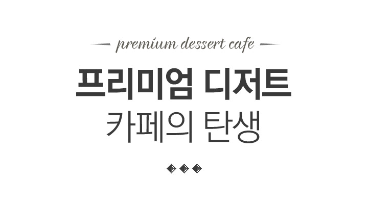
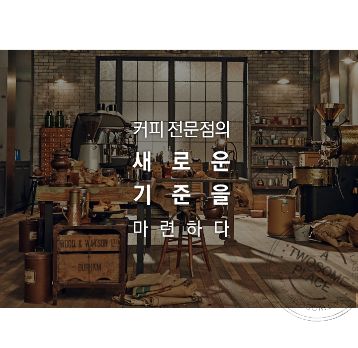
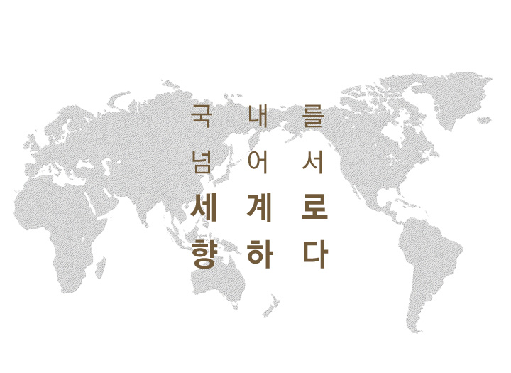

소비자에게 커피 전문점조차 익숙치 않았던
2002년, 'Cafe with cake & sandwich'라는
컨셉으로 전문 파티쉐가 매장에서
직접 만드는 케이크, 샌드위치를 제공하는
디저트 카페로 새로운 카페문화를 선보인
투썸플레이스

프리미엄 디저트카페의 새로운 기준
2009년, 가맹사업을 시작하면서 아카데미 프로그램을 강화하여 모든 매장에서 기존 브랜드 강점을 최대한 구현하고자 했고 2010년 BI/SI 리뉴얼과 함께 더욱 강화된 정통 유럽식 디저트와 유럽풍 살롱을 현대적으로 재해석한 세련되고 시크한 인테리어로 프리미엄 디저트 카페의 새로운 기준을 마련했습니다.
NEW 투썸플레이스2014년 3월, 신사동 가로수길에 오픈한 NEW 투썸플레이스는 커피의 전문성과 디저트의 프리미엄을 한층 강화하고 인테리어에 빈티지한 감성을 더해, 매력적인 새로운 컨셉으로 주목 받고 있습니다.

글로벌 디저트 카페로의 도약
2002년 1호점을 시작으로 현재 470여 개점을 운영하는 투썸플레이스는 2011년 중국 1호점을 시작으로 해외시장에 프리미엄 디저트 문화를 전파하고 있습니다. 대한민국 프리미엄 디저트 카페를 넘어 글로벌 디저트 카페로 도약하고 있습니다.

- 투썸플레이스 뉴SI 가로수길점, 광주상무점 OPEN
- 투썸플레이스 500호점 돌파
- 투썸플레이스 스튜디오 (홍대 테디점) OPEN
- 투썸플레이스 400호점 돌파
- 해외 첫 복합 매장 중국리두 OPEN
- 투썸플레이스 200호점 돌파
- 투썸 중국 1호점 OPEN
- BI/SI Renewal
- 투썸플레이스 100호점 돌파
- 투썸플레이스 가맹 사업 시행
(안국역 가맹 1호점 OPEN)
- 투썸플레이스 브랜드 론칭
(1호점 신촌점)